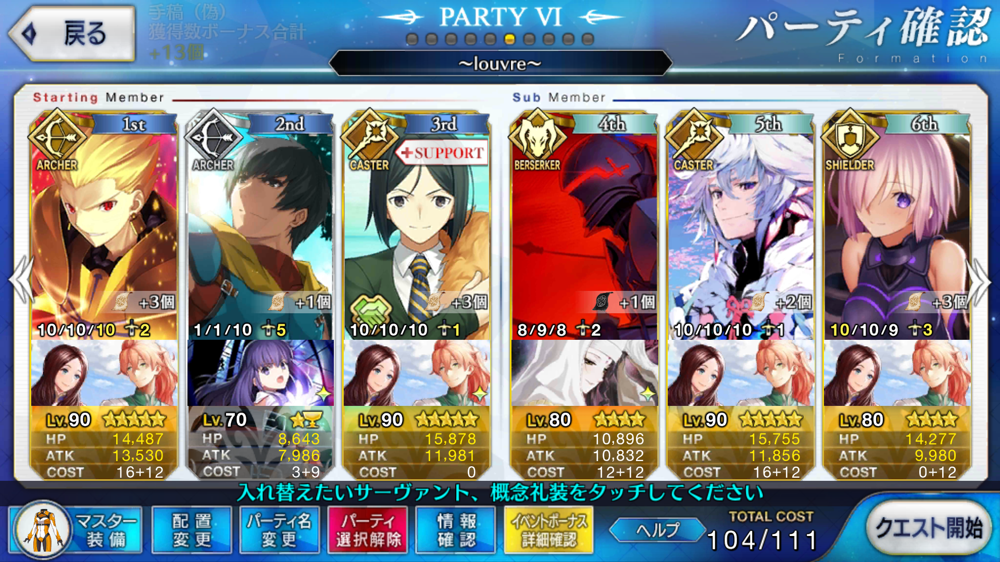
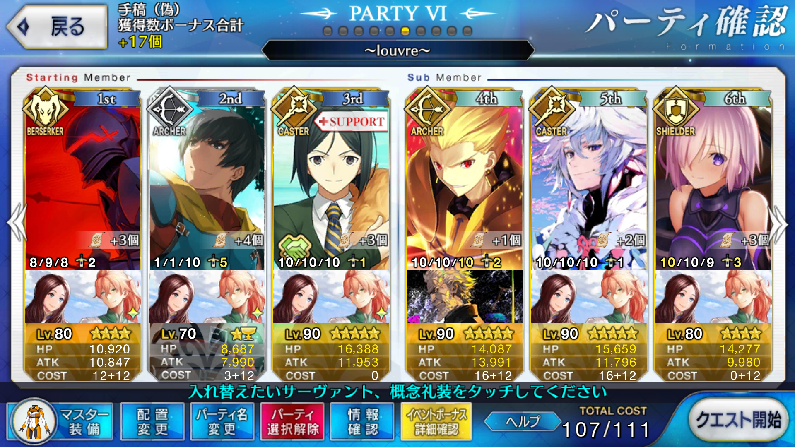
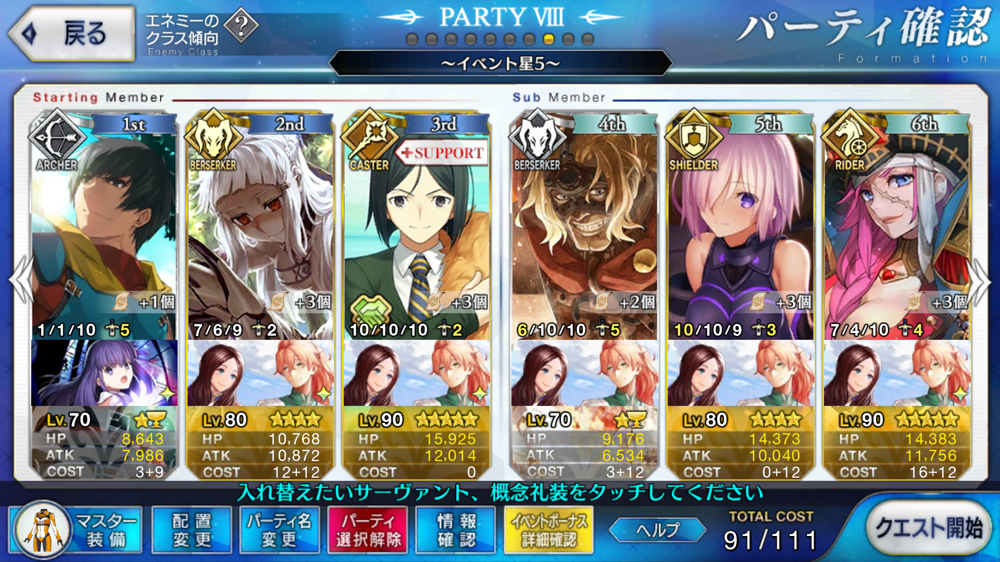

【FGO】復刻：ダ・ヴィンチと七人の贋作英霊 ライト版 ルーヴル 周回メモ
この記事ではFGOイベントの周回を扱います。
編成画像にて最終再臨絵のネタバレがあるのでご注意を
基本方針
- 可能な限りドロップ追加礼装（カルデアの顕学）を搭載する
- 3T周回する
周回用キャラ選別
宝具x3で終わればそれが一番良い
ただし、3wは敵のHPが多く宝具1発のみで片付けるのが難しい
2wの宝具で星を出し、3wは宝具+バスタークリティカルで殺す
NP補助のために孔明＋マーリン＋オーダーチェンジを採用する
凸ケンガクなしの最終編成はこんな感じ

狂スロに銀フォウが入っていないためか、2wの撃ち漏らしがやや目立つ
1w
凸虚数 or 未凸カレスコアーラシュ安定
後ろのキャラを一人引っ張り出しつつ1wをスキップできるこの性能はやはり優秀
スキル3のレベルが6以上になっていれば、凸虚数でNP100に届く
聖杯を一つ入れてLv70にしていると1wを宝具のみで突破しやすい
Lv60で銀フォウマ程度だと撃ち漏らしが発生し得る
追撃したくない場合は聖杯を入れてしまうのも手
凸ケンガクがあればアーラシュのスキル＋孔明のスキル2種でもNP100にできるが、その後のNP工面に影響があるので注意
凸カレスコを持っている圧制者であれば凸カレスコ狂スロも選択肢に入る
2w
全体宝具で2wを飛ばせ、かつ星を出せるのはバーサーカーのランスロットか頼光くらい
追撃含め、宝具レベルを上げたモードレッドでも良いかもしれない
ランスロットの場合、宝具レベルを上げても孔明マーリンギルの強化スキル程度では撃ち漏らす可能性がある
1wで孔明のスキルを使わない場合、凸菩薩ならNP60 + 孔明のスキル2種 + オーダーチェンジ後夢幻のカリスマでNP100を達成できる
ランスロットの宝具はオーバーチャージで自身の攻撃力が上がるため、これを含めれば2wを撃ち漏らしにくくなる
また、スキル2のレベルをしっかり上げておくことで3wのための星を大量に出すことができる
スキルレベル5の場合は30個程度生産でき、安定ラインには乗る
頼光の場合はスキル2のレベルを上げたランスロットに星生成で勝てないため、3wの安定性がやや難（素では23個程度）
宝具レベル2では撃ち漏らしが発生する可能性があるが、追撃で突破可能
宝具レベル3なら撃ち漏らしはない
ただし、凸菩薩であれば36個程度の星生産になり、安定ラインに乗る
1wで孔明のスキルを使う場合は凸菩薩ではNPが足りなくなる（W孔明ができるのであれば、それで足りる）
星の生成が足りない場合、マーリンに2030年の欠片等の星生成礼装をつける手もある（ただし、ケンガクが減るので注意）
3w
全体宝具で取り巻きのセイバー アーチャーのHP45,000程度を全て吹き飛ばす必要がある
やはりここで優秀なのはギルガメッシュ
宝具レベル2 Lv90 銀フォウマであれば取り巻きは全く問題なく殺せる
あとは、頼光の宝具を3wで撃つ手もある
星を十分に産めるのであれば狂フランも選択肢に入る
肝心のボスはHPが14万または20万
ルーラー相手には特にダメージが通りにくく、英雄作成はギルまたはバーサーカーのバスタークリティカルに合わせなければ削りきれない
スター集中を持ったギル、狂ランスロット、頼光であれば星30程度あれば英雄作成と合わせ、バスタークリティカルでボスを倒しやすい
バスターの枚数が多いランスロットは事故率を抑えてくれる
改善

凸ケンガクが2枚になれば、5枠をケンガクで埋められる
- 孔明で攻撃防御バフ
- 弓矢作成→ステラ
- 鑑識眼をランスロットに
- オーダーチェンジ孔明→マーリン
- 夢幻のカリスマ 幻術 カリスマ 精霊の加護 魔力逆流
- 騎士は徒手にて死なず
- 英雄作成 エヌマ・エリシュ クリティカル
2wをランスロットの宝具で飛ばす際、撃ち漏らす場合があるため追撃カードはしっかり選ぶ
3wで英雄作成する対象はランスロットが優先
ただし、ランスロットにカードがなくギルでバスター込みブレイブチェインできるのであればそちらでも良い
バスターが１枚もない場合はガンドで保険をかけておく
ランスロットの宝具レベルが高ければ、ギルの代わりに頼光でも可
別パターン CEOドレイク法

こちらの構成であればクリティカルに依存せず、安定してほぼ宝具のみで周回可能
- 黄金率（美）
- 弓矢作成からのステラ
- 鑑識眼をスパルタクスに
- 孔明スキル2,3
- オーダーチェンジ孔明→ドレイク
- スパルタクススキル2,3
- CEOスキル1,3
- 我が愛は爆発する
- 全体強化、嵐の航海者、星の開拓者、宝具チェイン
邪ンヌの場合はHPが高く、最後にCEOのバスターが必要
バスター3枚のため事故率は低く、仮に事故を起こしてもガンドで対処可能
クリティカルに頼る必要はなく、非常に安定する
凸ケンガクが3枚あると、孔明でなくマーリンにもできる
どこがおいしい？
手稿効率
FGOアイテム効率劇場（2018/01/18 23:20現在）によれば、エルミタージュは1周約7枠、ルーヴルは11枠
今回採用する構成は真+12/偽+13
同じ構成で考えると1周で50個前後変わる
ルーヴル以外全員未凸ケンガク装備で回れる（真+16/偽+17）として、手稿のボーナス平均数は以下の通り
| 場所 | 手稿追加数 |
|---|---|
| 初級 | 1 * 16 = 16 |
| 中級 | 2 * 16 = 32 |
| 上級/ヴェッキオ | 3 * 16 = 48 |
| チャルトリスキ | 4 * 16 = 64 |
| ウフィツィ/ヴァチカン | 5 * 16 = 80 |
| グラツィエ | 6 * 16 = 96 |
| アンブロジアーナ/エルミタージュ | 7 * 16 = 112 |
| ルーヴル | 11 * 12 = 132 |
ボックスガチャにある素材や種火がほしいかつ、ある程度のドロップボーナス礼装を積んで周回できるならルーヴル一択
QP効率
モナリザが落ちる分、エルミタージュはQP効率で言えばルーヴルに勝るのでは？
エルミタージュ1周でモナリザ40個 + 手稿27 + 112 = 139個 手に入る計算とすると
1箱開けるのに必要な手稿は600のため、1箱分開けるためにはエルミタージュを4.3周する必要がある
1箱当たりの合計QPは502 + 1010 + 520 + 36 + 64 = 382万QP
モナリザの交換は1個あたり1万QPで、1周につき40万QPの計算になる
382/4.3 = 89
エルミタージュ1周あたりのQPは40 + 89 = 129万QP
ルーヴル1周でモナリザ0、手稿39 + 132 = 171個 手に入る計算とする
1箱開けるためにルーヴルを3.5周する必要がある
ルーヴル1周あたりのQPは382/3.5 = 109万QP
エルミタージュのほうが20万QP/周多いが、これは1箱に入っているQPの約5％にすぎない
なお、宝物庫超級1周で100万QP以上手に入るため、素材やマナプリという副産物のあるボックスを優先したほうが良さそうではある
素材効率
| アイテム | EV場所 | 率 | FQ場所 | 率 | 箱 |
|---|---|---|---|---|---|
| 証 | 初級 | 12.6 | ダラス | 68.0 | 4（真） |
| 牙 | 中級 | 17.8 | エリドゥ | 64.0 | 4（真） |
| 歯車 | 上級 | 19.8 | バレルタワー | 45.9 | 0 |
| 爪 | ヴェッキオ | 24.5 | 地底平原 | 20.0 | 0 |
| 八連 | ヴェッキオ | 24.4 | 桃源郷 | 40.5 | 2（真） |
| 逆鱗 | アンブロ | 15.2 | ニップル | 14.2 | 0 |
| 蹄鉄 | アンブロ | 22.9 | 無の大地 | 43.9 | 0 |
| 心臓 | チャルトリ | 40.6 | 新宿御苑 | 12.6 | 0 |
| 頁 | チャルトリ | 24.7 | 新宿二丁目 | 31.2 | 2（偽） |
| 幼角 | ウフィツィ | 17.7 | 野営地 | 23.7 | 0 |
| 凶骨 | ウフィツィ | 20.3 | 冬木X-G | 64.0 | 4（偽） |
| 脂 | ヴァチカン | 16.4 | 北の岸壁 | 18.5 | 0 |
| ランタン | ヴァチカン | 23.7 | クタ | 39.9 | 0 |
| 涙石 | グラツィエ | 31.7 | 新宿二丁目 | 18.5 | 0 |
| 塵 | グラツィエ | 28.2 | シャーロット | 64.2 | 4（偽） |
| 根 | エルミタ | 16.9 | 聖都市街 | 12.4 | 0 |
| 種 | エルミタ | 32.1 | バビロン | 50.9 | 0 |
まず、ボックスに入っているものについてはわざわざそれを狙って周回するよりもボックス効率を上げたほうが良い
歯車についてもバレルタワーの半分以下の確率になっているようなので、上級周回は苦痛だろう
ウフィツィ、ヴァチカンはフリークエストに比べてドロップ率が低く、無理に回る価値はない
心臓が欲しい場合はチャルトリスキ周回で必要分＋αを確保しておきたい
普段の3倍以上のドロップ率のため、心臓不足であればここで走ると良い
心臓ほどではないが、涙石や精霊根も普段に比べ高確率になっている
それが原因で再臨がスキル強化が止まっている場合は、一時的にそこを回ることも視野に入れたい
周回すべき場所
ルーヴル
戦力がそこそこ整っており、それなりに高速に回せるなら基本的にここ
チャルトリスキ/グラツィエ/エルミタージュ
普段手に入れにくい素材を狙いつつ手稿を稼ぐならここ
特に心臓のチャルトリスキは大いに走る価値がある
アンブロジアーナ
逆鱗は普段と同じくらいのドロップ率のため、それだけを狙って走るのはあまりおすすめできない
ルーヴルが周回できないが手稿の効率を求めたいという場合にはここ？